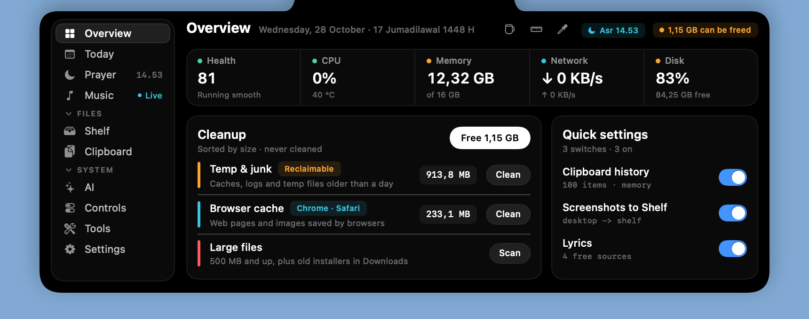
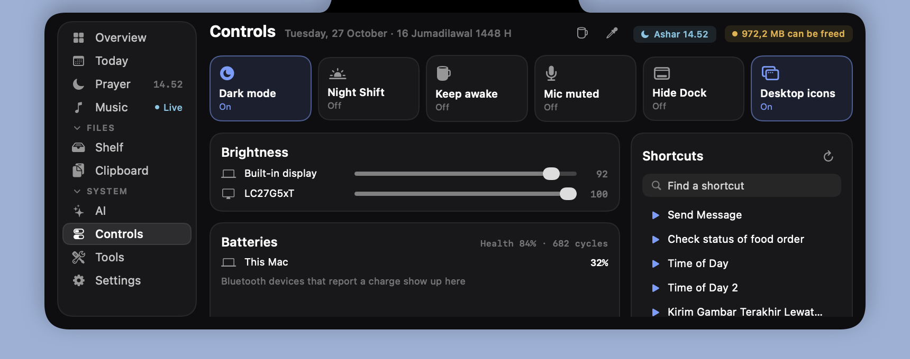
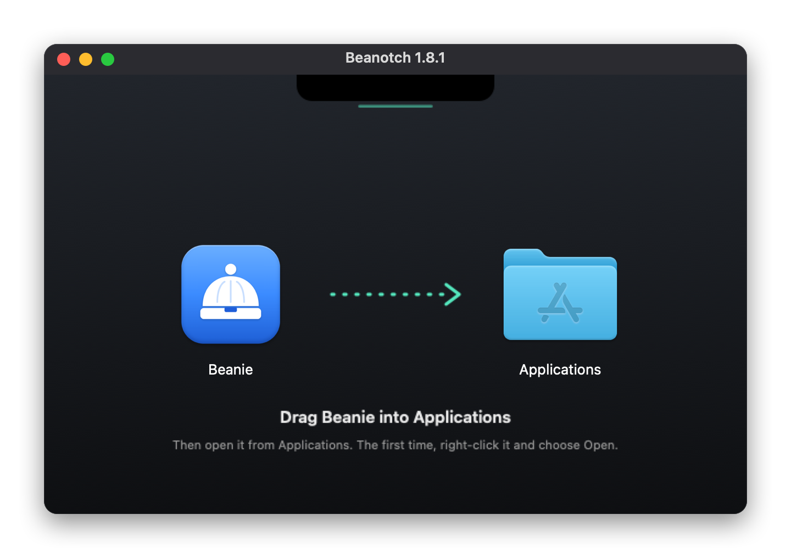

Today
Weather, next event with Join for 19 call services, tasks, and a focus timer.
Hover the notch or press ⌥ Space. System stats, your next meeting, prayer times, AI usage, a file shelf, clipboard history and synced lyrics — in a 2.6 MB native app that idles near 0% CPU.

Everything you'd open three apps for, folded into the black strip you were ignoring.
Weather, next event with Join for 19 call services, tasks, and a focus timer.

Kemenag, MWL, Umm al-Qura. Hijri date, qibla compass, Ramadan mode.

Any player, YouTube included. Synced lyrics, sleep timer, output picker.

Claude Code and Codex, read from local logs: tokens, API cost, rate limits.
Drop files on the notch, drag them out later. Right third sends by AirDrop. Screenshots land here.
Text, image and file history with fuzzy search and on-device OCR. Passwords are skipped.
An uninstaller that finds the leftovers, a large-file finder and a camera mirror. Nothing is recorded.
The notch grows just enough to show what matters right now, then tucks itself away again.

Synced lyrics while music plays, or a mini player.

Levels as you change them. Scroll on the notch for volume.

Live progress, and a note when the file lands.

Focus and countdown timers, always in view.

Unread counts and short notices from your apps.

Charge for each bud and the case when they connect.

A countdown before each prayer, calculated on your Mac.
Charging, Caps Lock, screenshots, Shortcuts results and updates, as short notices.
Small, native, and polite about permissions.
Swift and SwiftUI with no third-party dependencies. A 2.6 MB universal binary that idles near 0% CPU.
Prayer times are worked out on the Mac. No analytics, no tracking, no API keys.
Calendars, Location, Camera — macOS prompts the first time a feature actually needs access.
The global shortcut is a Carbon hot key, so ⌥ Space works without handing over input control.
Brightness, Night Shift and DDC load at run time. Missing symbols just switch that feature off.
Optionally checks GitHub Releases once a day. Grab the DMG, drag to Applications, done.
Layouts, themes, accents, sizes and notch shapes. Every choice previews live, right where it will sit. Try it here: this page follows along.

Brow is free, open and tiny. If something isn't covered here, open an issue on GitHub.
Yes. On Macs without a notch, Brow draws a notch-like strip at the top centre of the screen. Pick the floating shape in Settings if you prefer it detached.
Brow is ad-hoc signed, not notarized. Right-click the app and choose Open once, or run xattr -dr com.apple.quarantine /Applications/Brow.app.
Prayer times are worked out on your Mac. For the weather, only your place's coordinates go to Open-Meteo, with no account, no key and no tracking. Lyrics lookups send just the song title and artist.
Brow is the same app under a new name. Settings, pins and Shelf come along on first launch. Turn Open at login on again, then delete Notchy.app.
Only for Messages, to read the unread badges on Dock icons (just the numbers). Everything else, including the ⌥ Space shortcut, works without it.
Yes. Brow is a universal app for Apple silicon and Intel on macOS 14 or later. Brightness for external monitors over DDC works on Apple silicon only.
Free and open source. A 2.6 MB universal app for macOS 14 or later.
Drag Brow into Applications.
It's ad-hoc signed, so right-click and choose Open once.
Or press ⌥ Space. That's it.

xattr -dr com.apple.quarantine /Applications/Brow.app